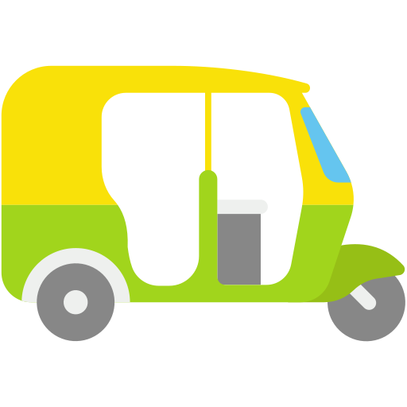
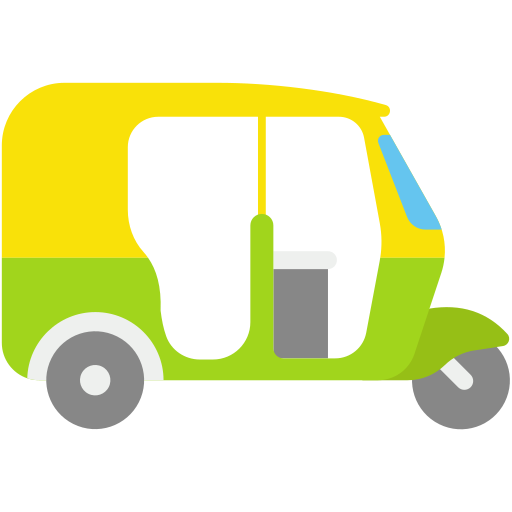

The
Commute.
#car pooling that matters..
 


The best thing about carpool is that by having more than one person riding for the same destination, the total cost for ride and fuel comes down to a very minimum level.
It also reduces the pollution!!
Overall, carpooling will not just bring down gas expenditure, but it will make travelling a lot more fun. By rotating driving responsibilities each day, you can save yourself from fatigue too.
When all travelers use Carpools to commute, there would be about 780000 fewer vehicle trips per day. This would save 336.53 million liters of fuel each year.
You travel together so it's obvious that you both talk and communicate with each other.
Reduced carbon emission– when people start carpooling, fewer cars on the road every day, which means fewer carbons being released into the air. A reduced amount of carbon emissions will help reduce air pollution as well.